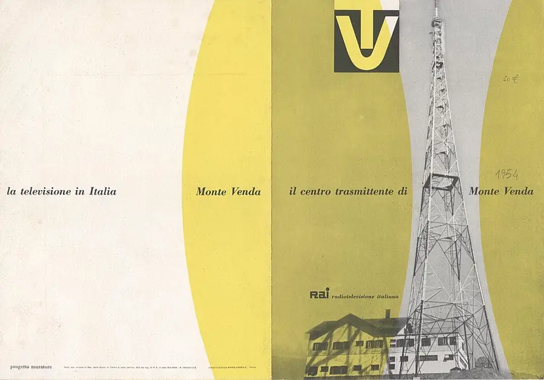

이탈리아 방송 협회 RAI
이탈리아 방송 협회(RAI)는 이탈리아 전 지역을 방송 대상으로 하는 이탈리아의 공영 방송이다. 수신료와 광고 수입이 주 수입원이며 유럽 대륙에서 5번째로 큰 규모의 방송사이다.
최종 업데이트

이탈리아 방송 협회는 어떤 브랜드인가
RAI는 이탈리아 국민에게서 징수하는 수신료와 광고 수입을 주 수입원으로 운영하는 공영 방송이다. 현재 3개의 TV 채널과 3개의 라디오 채널을 가지고 있으며, 위성 채널과 디지털 방송 전용 채널도 운영한다.
산하에는 RAI 국립 교향악단을 두고 있다. 뉴스, 스포츠, 어린이, 교육, 역사 채널과 국제 방송, 트렌티노알토아디제주와 프리울리베네치아줄리아주를 대상으로 한 소수 언어 방송을 함께 내보낸다.
2006년 토리노 동계 올림픽에서 중심적인 역할을 했으며, 이탈리아의 자동차 경주 지로 디탈리아의 중계 방송사로도 알려져 있다. 1980년대에 전국적 규모의 민영방송이 허가되면서 방송 독점 시대가 막을 내렸고, 이후 민영 방송국들과 경쟁하게 되었다.
이탈리아 방송 협회는 어떻게 시작되고 성장했나
1924년에 'URI'(Unione Radiofonica Italiana)라는 이름으로 개국했다. 그해 10월 5일 로마 오페라 극장에서 베니토 무솔리니의 취임 방송을 했다.
1927년에는 Ente Italiano per le Audizioni Radiofoniche(EIAR)로 이름이 바뀌었고, 1944년 제2차 세계대전 종전 이후 'Radio Audizioni Italiane'로 바뀌었는데 약칭 RAI는 여기에서 비롯되었다. 1954년 1월 3일 텔레비전 방송을 시작하면서 정식 명칭이 현재의 'Radiotelevisione Italiana'로 바뀌었다.
1957년에는 상업 광고를 개시했고, 1977년 컬러 텔레비전이 시작된 이후 일반적인 블록광고 형태로 바뀌었다.
이탈리아 방송 협회의 브랜드 아이덴티티는 무엇인가
이탈리아 전 지역을 대상으로 하는 공영 방송으로, TV와 라디오는 물론 국제 방송과 지역어 방송까지 아우르는 점이 특징이다.
이탈리아 방송 협회의 대표 제품과 서비스는 무엇인가
TV 메인 채널은 종합 채널인 Rai 1, Rai 2, Rai 3이다. Rai 1은 1954년 1월 3일, Rai 2는 1961년 11월 4일, Rai 3은 1979년 12월 15일에 개국했다.
이 밖에 영화와 TV 시리즈 중심의 Rai 4, 문화와 다큐멘터리 중심의 Rai 5, 어린이 채널 Rai Gulp, 뉴스 채널 Rai News24, 스포츠 채널 Rai Sport 등이 있다. 라디오는 뉴스·시사 중심의 Rai Radio 1, 대중 가요와 토크 중심의 Rai Radio 2, 클래식과 교양 중심의 Rai Radio 3을 운영한다.
뉴스 조직으로는 TG1, TG2, TG3, TGR가 있다.
이탈리아 방송 협회는 지금 어떤 상태인가
현재 3개의 TV 채널과 3개의 라디오 채널을 가지고 있으며, 위성 채널과 디지털 방송 전용 채널도 운영한다. 이탈리아 각 지역에 사무소를 두고 있고, 브뤼셀, 파리, 베를린, 런던, 뉴욕, 베이징 등 해외 사무소에서 뉴스 보도를 제공한다.
2003년 12월 가스파리 법에 따라 분할 민영화가 예정되었으나, 당시 총리 실비오 베를루스코니가 메디아셋 산하 3개의 민영 방송국을 소유한 점이 비난을 사 민영화 계획은 무산되었다.
이탈리아 방송 협회 로고는 어떻게 변해왔나
시기는 위키데이터 로고 기간 또는 위키미디어 커먼즈 파일 정보 기준입니다. 이미지를 누르면 원본 파일과 라이선스를 볼 수 있습니다.
사진으로 보는 이탈리아 방송 협회의 역사

자주 묻는 질문
이탈리아 방송 협회는 어느 나라 브랜드인가요?
이탈리아 방송 협회는 이탈리아의 미디어·엔터테인먼트 브랜드입니다.
이탈리아 방송 협회는 언제 설립되었나요?
이탈리아 방송 협회는 1924년 설립되었습니다.
이탈리아 방송 협회의 브랜드 아이덴티티는 무엇인가요?
이탈리아 전 지역을 대상으로 하는 공영 방송으로, TV와 라디오는 물론 국제 방송과 지역어 방송까지 아우르는 점이 특징이다.
이탈리아 방송 협회의 대표 제품은 무엇인가요?
TV 메인 채널은 종합 채널인 Rai 1, Rai 2, Rai 3이다.
이탈리아 방송 협회는 현재 어떤 상태인가요?
현재 3개의 TV 채널과 3개의 라디오 채널을 가지고 있으며, 위성 채널과 디지털 방송 전용 채널도 운영한다.
이탈리아 방송 협회의 창업자는 누구인가요?
이탈리아 방송 협회의 창업자는 이탈리아 정부입니다(위키데이터 기준).
이탈리아 방송 협회의 본사는 어디에 있나요?
이탈리아 방송 협회의 본사는 로마에 있습니다(위키데이터 기준).
출처와 검증
이탈리아 방송 협회 관련 참고: 공식 웹사이트 · 위키데이터 Q19616 · 한국어 위키백과 · 영어 위키백과. 브랜드명은 한글과 원어를 함께 표기하되 데이터에 없는 표기는 만들지 않습니다. 기원 국가·설립연도는 검수된 정의문에서 확인된 값을 우선하고, 없을 때만 공식 웹사이트 URL이 일치하는 위키데이터 개체의 값을 씁니다. 위키데이터 값은 2026-11-11 기준입니다.